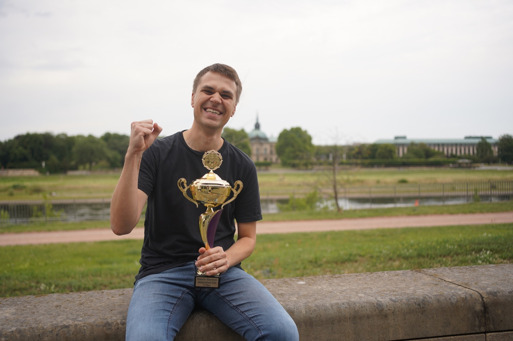

Wer Schach liebt, kennt diesen Wunsch: Andere sollen einmal sehen, wie aufregend eine Partie sein kann. Nicht erst hinterher, wenn jemand die entscheidende Kombination erklärt, sondern genau in dem Moment, in dem beide am Brett um die richtige Entscheidung ringen. Im Sommer 2027 bekommt der deutsche Schachsport dafür eine neue Gelegenheit. Bei den Finals in Stuttgart gehört Blitzschach erstmals zum Programm. [2]
Ein Sonntag für die Titelentscheidungen
Der DSB kündigt die Entscheidungen um die Deutsche Meisterin und den Deutschen Meister im Blitzschach für Sonntag, den 1. August 2027, an. Neu ist die Schlussphase mit Viertelfinale, Halbfinale und Finale. Sie soll live in ARD und ZDF übertragen werden. [1]
Das klingt nach einem gut nachvollziehbaren Weg zum Titel: Wer setzt sich durch, wer erreicht die nächste Runde, wer steht am Ende im Finale? Auch Menschen, die keine Eröffnungsvarianten kennen, können sich an solchen Fragen orientieren. Für die Vermittlung im Fernsehen ist das eine reizvolle Ausgangslage. Wie die einzelnen Begegnungen ausgestaltet werden, lässt sich daraus allerdings noch nicht ablesen.
Was „live in ARD und ZDF“ bisher bedeutet
Die Finals dauern vom 29. Juli bis 1. August 2027. Nach der Veranstaltermitteilung vom 12. Oktober sind 19 Deutsche Meisterschaften vorgesehen. ARD und ZDF berichten an allen vier Tagen in ihren Hauptprogrammen und per Stream. Neben Schach kommt Beachhandball neu hinzu; auch Bogensport ist Teil des angekündigten Programms. [2] Die Sportschau bestätigt den Terminrahmen und die Übertragung des Gesamtveranstaltungsprogramms im frei empfangbaren Fernsehen. [3]
Für Schachfans ist dabei eine Unterscheidung wichtig: Die Zusage einer Liveübertragung ist noch kein fertiger Schach-Sendeplan. Die geprüften Ankündigungen nennen keine konkreten Uhrzeiten, keine Länge der Schachbeiträge und keine genaue Aufteilung zwischen den beiden Sendern und ihren Streams. Eine lückenlose Übertragung jeder Partie lässt sich daraus nicht versprechen.
Der Schachtermin ist der 1. August 2027. Vor dem Einschalten lohnt sich ein Blick in die dann veröffentlichten Programme von ARD, ZDF und den Finals. Redaktionsstand dieses Beitrags: 14. Oktober 2026.
Warum gerade Blitzschach neugierig macht
Beim Zuschauen kann eine Schachpartie zwei sehr unterschiedliche Geschichten erzählen. Auf dem Brett entsteht ein Angriff, eine Figur gerät in Gefahr oder ein Bauer läuft auf die letzte Reihe zu. Gleichzeitig läuft die Uhr. Je weniger Zeit bleibt, desto dringlicher wird die Frage, ob eine gute Idee rechtzeitig gefunden und ausgeführt werden kann.
Gerade diese zweite Geschichte lässt sich auch ohne viel Vorwissen verfolgen. Ein Blick auf die Uhr genügt, um den Zeitdruck zu verstehen. Die erste Geschichte braucht oft etwas Hilfe: Welche Drohung steckt hinter einem Zug? Warum ist ein scheinbar harmloser Tausch wichtig? Eine verständliche Erklärung kann aus einer schwer lesbaren Stellung einen spannenden Wettkampf machen.
Aus unserer Sicht liegt darin die besondere Chance einer Fernsehübertragung. Sie kann Menschen abholen, die Schach bisher vor allem mit langem Nachdenken verbinden. Dabei sollte die Geschwindigkeit die Ideen auf dem Brett sichtbar machen, statt sie zu überdecken. Ob und wie die Sender das lösen, bleibt eine der interessanten Fragen bis zum Turnier.
Ein neues Finale – noch kein vollständiges Regelwerk
Viertelfinale, Halbfinale, Finale: Diese Stufen stehen in der DSB-Ankündigung. [1] Nicht erläutert werden dort die Qualifikation für diese Phase, die Zahl der Partien je Begegnung, die genaue Bedenkzeit oder die Regeln bei Gleichstand. Deshalb nennen wir hier bewusst keine vermeintlich feststehende Minuten- oder Rundenzahl.
Für die sportliche Einordnung sind solche Details relevant. Eine einzelne Partie stellt andere Anforderungen als eine Begegnung über mehrere Partien. Und ein möglicher Stichkampf beeinflusst, wie Spielerinnen und Spieler ihre Kräfte und ihr Risiko einteilen. Erst die Ausschreibung wird zeigen, wie der Weg durch das Turnier insgesamt aussieht.
Zwei Titel, zwei Gesichter
Als Titelverteidiger nennt der DSB Rasmus Svane vom Hamburger SK und Josefine Safarli von der OSG Baden-Baden. [1] Die Fotos in diesem Beitrag zeigen beide mit ihren Pokalen in Dresden am 26. Juli 2026. Es sind Aufnahmen aus dem Vorjahr der geplanten Finals-Premiere, keine Bilder aus Stuttgart 2027.

Foto: © Finn Engesser · DSB / Schachgipfel, Galerie vom 11. Tag.
Solche Bilder erzählen etwas, das in Ergebnislisten schnell verloren geht: Hinter einem Meistertitel stehen Menschen, für die dieser Moment viel bedeutet. Genau dort kann eine Übertragung ansetzen. Wer die Freude nach einer gewonnenen Partie versteht, braucht noch keine Wertungszahl einordnen zu können. Eine bestätigte Teilnehmerliste für 2027 ersetzen die Namen der Titelverteidiger allerdings nicht.
Was nach dem Fernsehtag bleiben könnte
Parallel zu den Finals ist der Schachgipfel in Stuttgart angekündigt. Für den DSB fällt das Ereignis zudem in sein 150. Jubiläumsjahr. [1] Damit entsteht ein Anlass, über den einzelnen Wettbewerb hinaus auf Schach aufmerksam zu machen.
Ob aus Aufmerksamkeit auch neue Begeisterung entsteht, entscheidet sich nicht allein vor der Kamera. Vielleicht möchte jemand nach der Sendung zum ersten Mal selbst eine Partie spielen. Vielleicht erinnert sich ein früheres Vereinsmitglied an die eigenen Blitzabende. Vielleicht fragt ein Kind, warum die Erwachsenen so aufgeregt auf die Uhr schauen. Für Vereine und offene Spielangebote sind das gute Gesprächsanlässe – ohne dass sich heute schon Mitgliederzuwächse oder Zuschauerzahlen vorhersagen ließen.
Wir im Hammerschach-Gamer freuen uns auf diesen Sonntag. Am schönsten wäre es, wenn jemand beim Zuschauen denkt: Das möchte ich auch ausprobieren. Bis dahin bleibt Zeit für viele eigene Partien – und für die Vorfreude auf Schach zwischen den anderen Sportarten der Finals.
Quellen & Bildnachweise
Eigenständig formulierter Ausblick mit redaktioneller Einordnung. Geprüft am 14. Oktober 2026; Grundlage sind die folgenden Veröffentlichungen. Noch offene Programm- und Regeldetails werden nicht als feststehend dargestellt.
- Deutscher Schachbund: Die Deutsche Blitzmeisterschaft live in ARD und ZDF (12.10.2026) – Schachtermin, Finalphase, Titelverteidiger und Schachgipfel.
- Die Finals: Beachhandball, Bogensport und Schach neu im Sportprogramm (12.10.2026) – Veranstaltungszeitraum, aktueller Umfang und TV-/Streaming-Rahmen.
- Sportschau: Alles Wichtige zu den Finals 2027 in Stuttgart – zusätzliche Einordnung zu Termin und frei empfangbarer Übertragung der Gesamtveranstaltung.
Beide Fotos: © Finn Engesser, Dresden, 26.07.2026. Quelle: DSB / Schachgipfel, Galerie „11. Tag“. Originaldateien: Josefine Safarli (DSC03526.JPG) und Rasmus Svane (DSC03559.JPG). Für die Webdarstellung auf 1600 × 1066 Pixel verkleinert und als JPEG komprimiert; ohne Beschnitt oder inhaltliche Veränderung. Verwendung mit persönlicher Freigabe des DSB für den Hammerschach-Gamer unter Fotografennennung; keine allgemeine Freigabe zur Weiterverwendung.